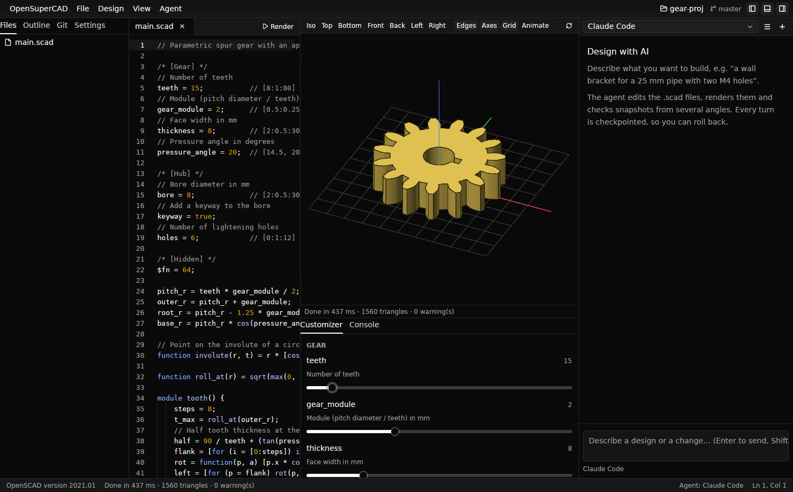
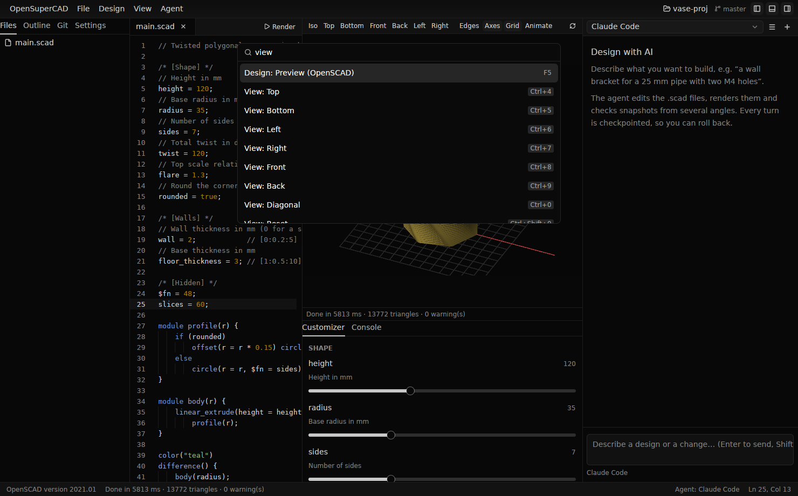
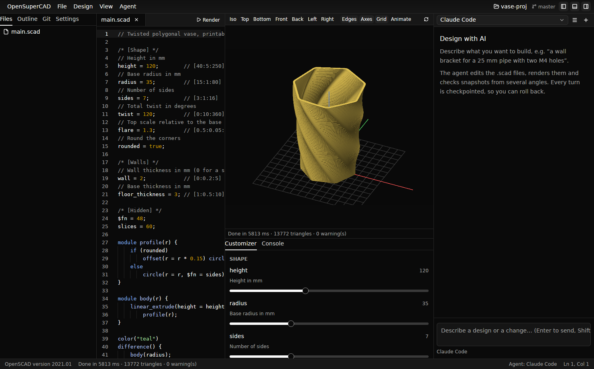
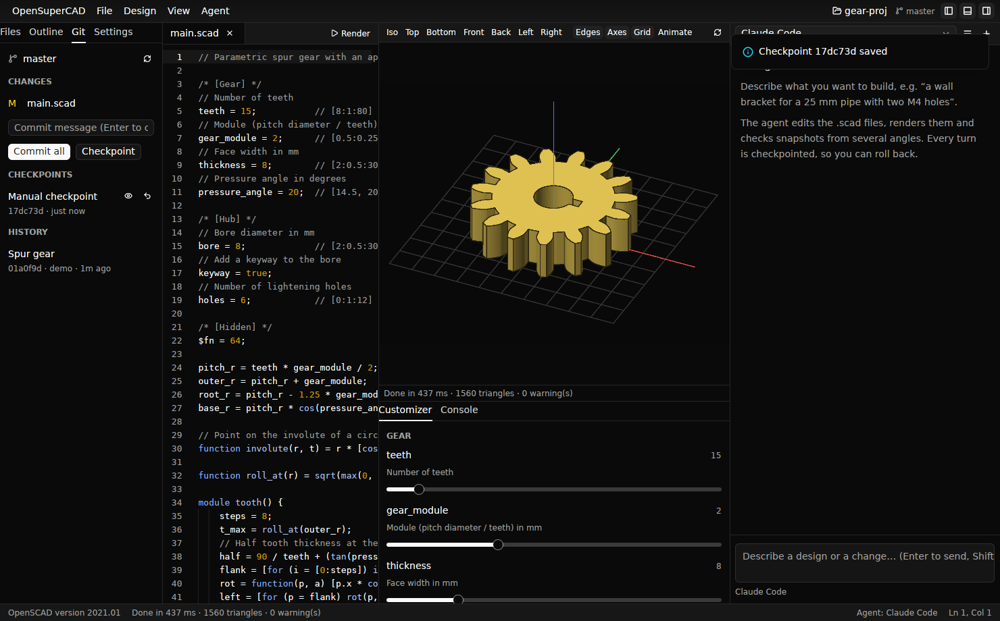
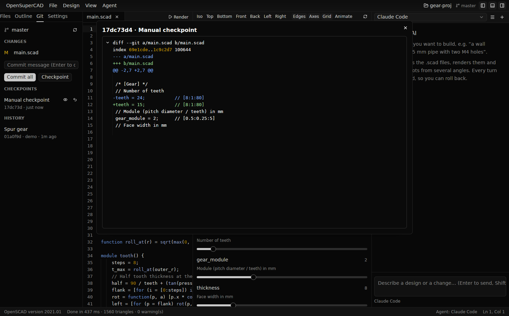

OpenSuperCAD is a fast, native, Zed-style editor for OpenSCAD. Describe what you want: the agent of your choice writes the parametric code, renders it, looks at it from several angles and iterates with you. Every step is checkpointed in git.

Speaks the Agent Client Protocol, like Zed: Claude Code, Gemini CLI, Codex, Goose, OpenCode or your own, with any model.
A built-in MCP server lets the agent render, take snapshots from any camera, tune customizer parameters and export. A design skill loads automatically.
The upstream openscad binary does the geometry, so every language feature, export format and option keeps working.
Each AI turn is a git checkpoint on a side branch. See exactly what changed, restore any iteration, or promote it to a commit.
Switch project folders instantly, each with its own files, settings and AI threads, plus git for commits and history.
Written in Rust on GPUI, Zed's GPU-accelerated UI framework. Linux, macOS and Windows.



osc/checkpoints/<branch> without touching your index or working tree.
.scad files, renders and checks snapshots from several angles. The preview updates live.| Platform | How |
|---|---|
| Debian / Ubuntu | .deb from the latest release, then sudo apt install ./opensupercad_*.deb |
| Arch Linux | .pkg.tar.zst from the latest release, then sudo pacman -U opensupercad-*.pkg.tar.zst |
| macOS (universal) | .dmg from the latest release |
| Windows (x86_64) | Installer (…-setup.exe) or portable .zip from the latest release |
| From source | cargo run --release -p opensupercad |
You also need OpenSCAD and at least one ACP agent. Then check your setup:
opensupercad doctor
opensupercad examples/phone-standMore: Usage · Agents and MCP tools · Architecture